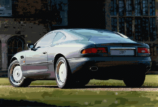
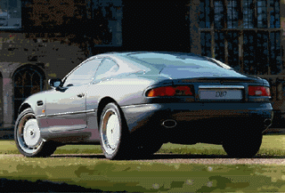
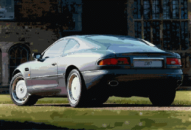
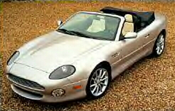

Aston Martin DB7 / Vantage


(Above) The DB7 Vantage Volante(aka the convertible version of the DB7 Vantage)
Specs(DB7 / DB7 Vantage)
Price |
$130,000 / $140,000 |
Top Speed |
172mph? / 184mph |
Acceleration |
|
Engine |
|
0-30mph |
2.1sec / N/A |
Type |
Supercharged I-6, 24valve DOHC / V12, 48valve DOHC |
0-60mph |
5.7sec / 4.9sec |
Displacement |
3.2L(3239cc) / 6.0L(5935cc) |
0-100 |
14.9sec / N/A |
Power |
335hp@5750rpm / 420hp@6000 |
1/4 mile |
14.3sec/98.1mph / N/A |
Torque |
361 lbs-ft@3000rpm / 400 lbs-ft@5000 |
Weight |
3,021 lbs / 3925 |
Handling |
|
Gas mileage |
(below) / 11.8mpg |
Skidpad |
.87g / N/A |
City |
14mpg / N/A |
600ft slalom |
66.7mph / N/A |
Highway |
21mpg / N/A |
Powertrain |
Front engined, rear wheel drive, 5 speed manual / 6 speed manual |
(? = incomplete data or unverified info, N/A = info Not Available)
Beyond the specs:
The DB7 from 1999 has been replaced for the year 2000 by the Vantage version, in place of the smooth supercharge inline 6 is an all new smoother stronger naturally aspirated V12. For this change and a few visual changes (better looking wheels and minor aerodynamic changes) you only have to pay $10,000 more putting it just above the price of the cheapest Ferrari which it still cannot outperform. However it is not a pure "made for racing only" super car, it is a very high class grand tourer with wood, leather, and the ride of a luxury car paired with the performance of a sports cars. The already awesome DB7 is now replaced with a significantly faster and slightly more luxurious DB7 Vantage all for just $10,000 more! Nearly twice the displacement and exactly twice the cylinder count plus the minor visual changes and all Aston Martin charges is $10,000 for it! The fine steering and stability of this car remains untouched by the Vantage upgrade and this car has become a much better deal for the money.
~Oracle